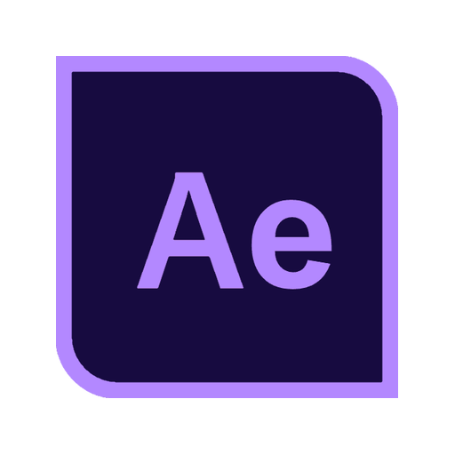
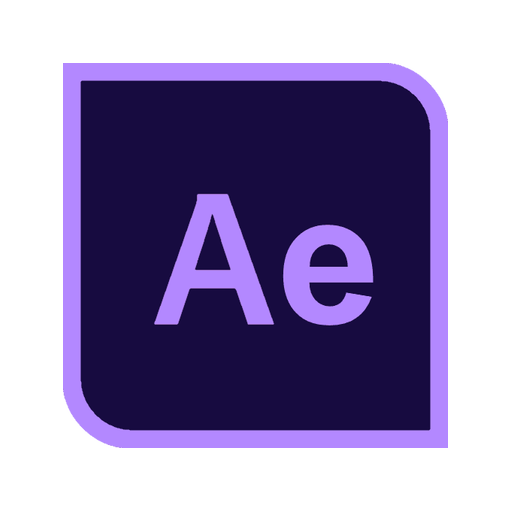

Twitch
In my free time, usually during game nights with friends, I sometimes share content on Twitch.
I then use these broadcasts to edit and share on different social media platforms.
Feel free to subscribe!
Software used:


Assets
To match my Twitch channel with my style and colors, several elements have been created. Stream screens are used for the introduction and conclusion of live broadcasts also for breaks, such as during game changes or discussions. The background images of these screens will change depending on my progress in completing all versions of Minecraft.
Additionally, a transition reflecting my color scheme is used during scene changes in my streams.
V1: A diamond shape scrolls from left to right, filling the screen for a few seconds.
The logo enlarges, the sword drops, then the logo shrinks, and the diamond completes its movement, revealing the next scene.
V2: A rectangle scrolls from left to right, filling the screen for a few seconds.
The new logo has a pulsating effect, then the rectangle completes its movement, and the new scene appears.
Software used:
 
